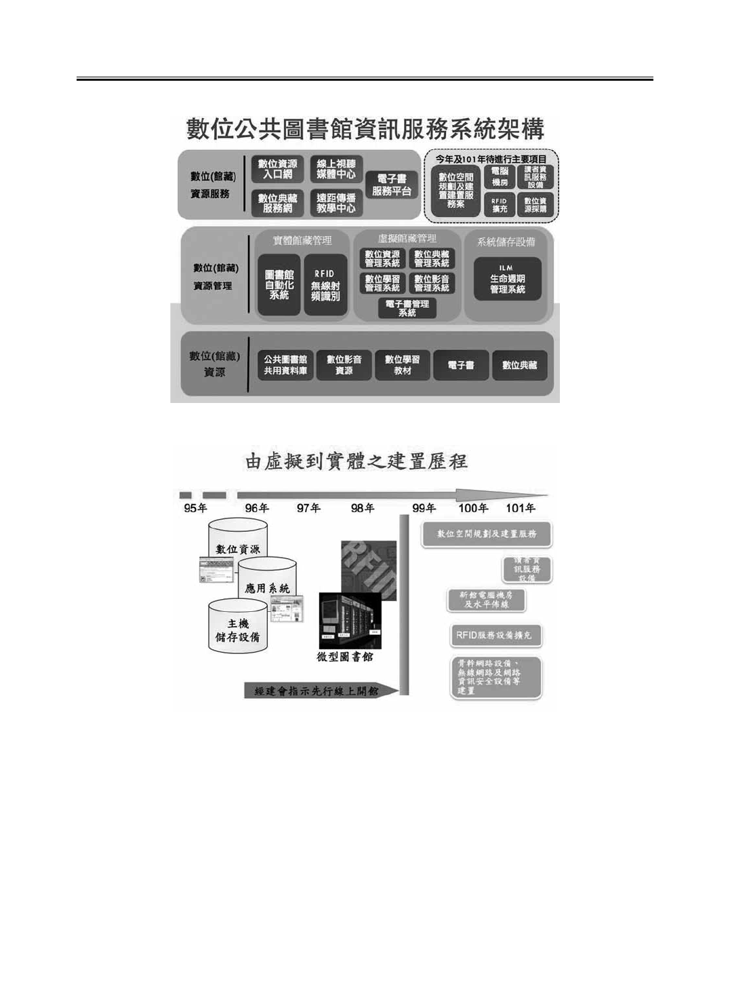
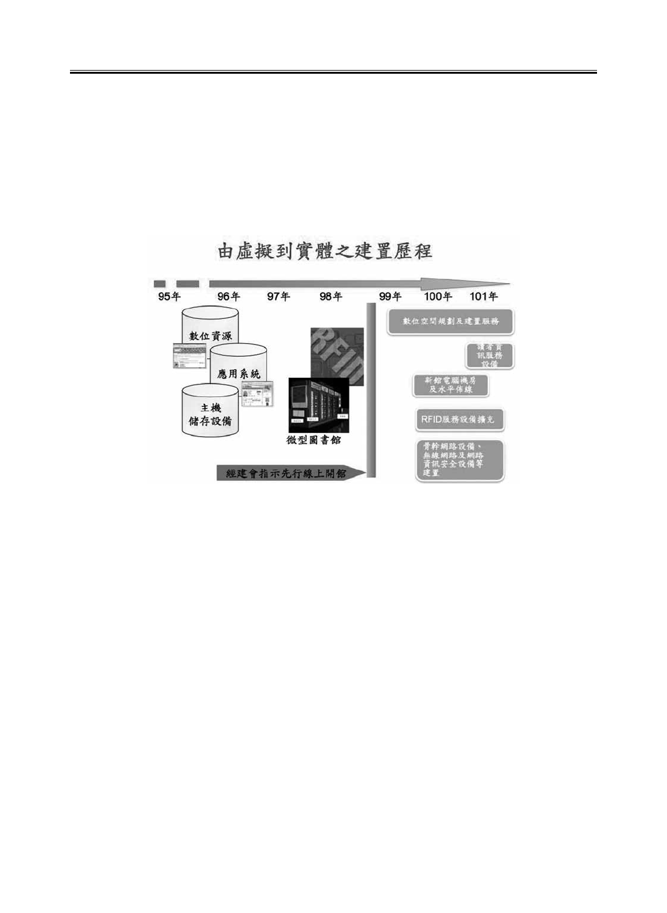
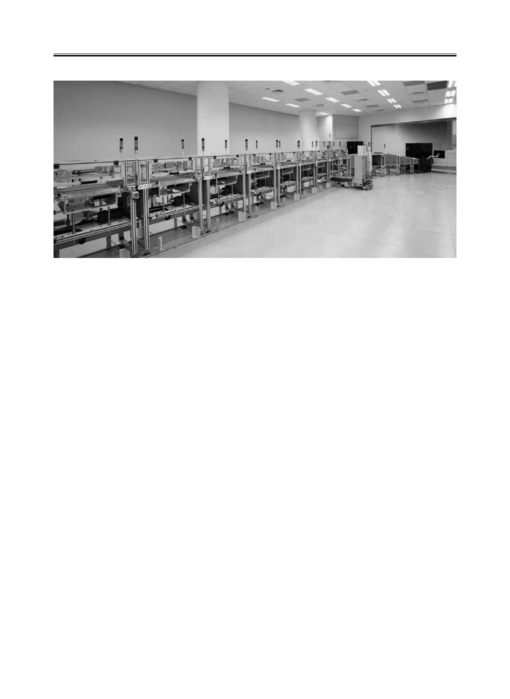
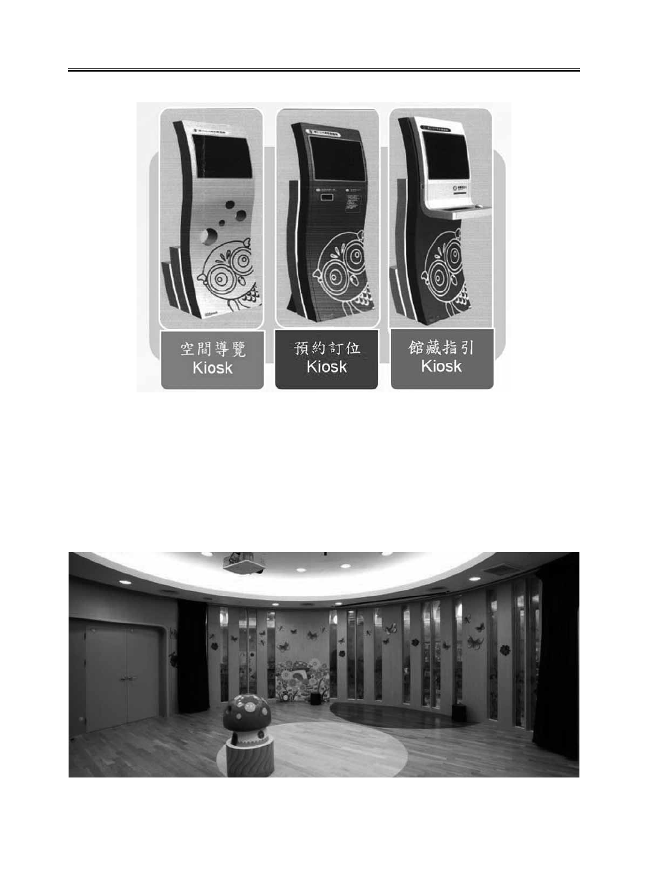
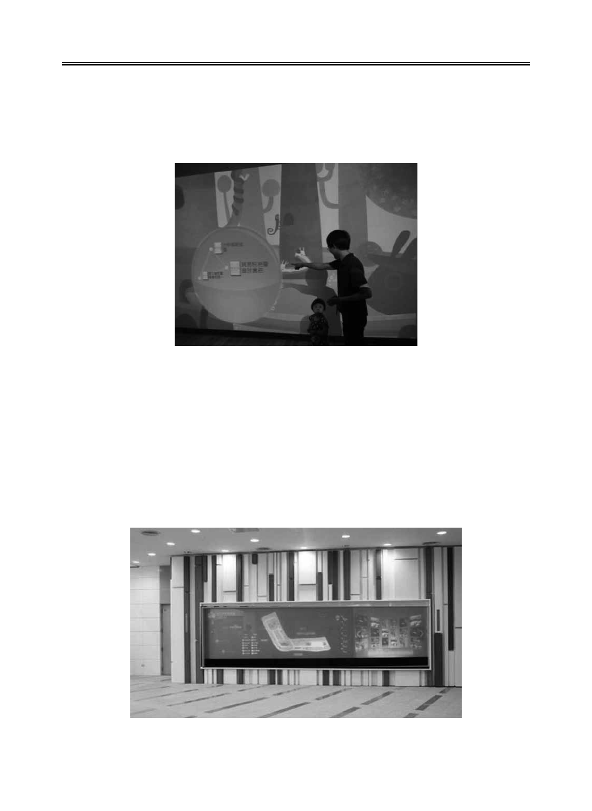
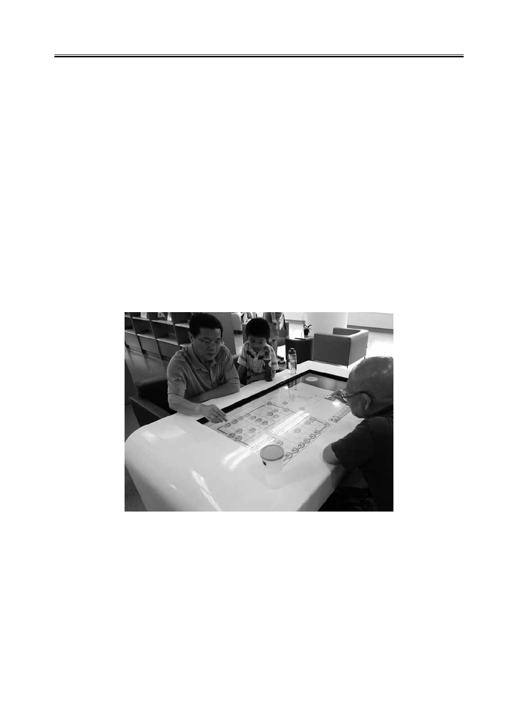
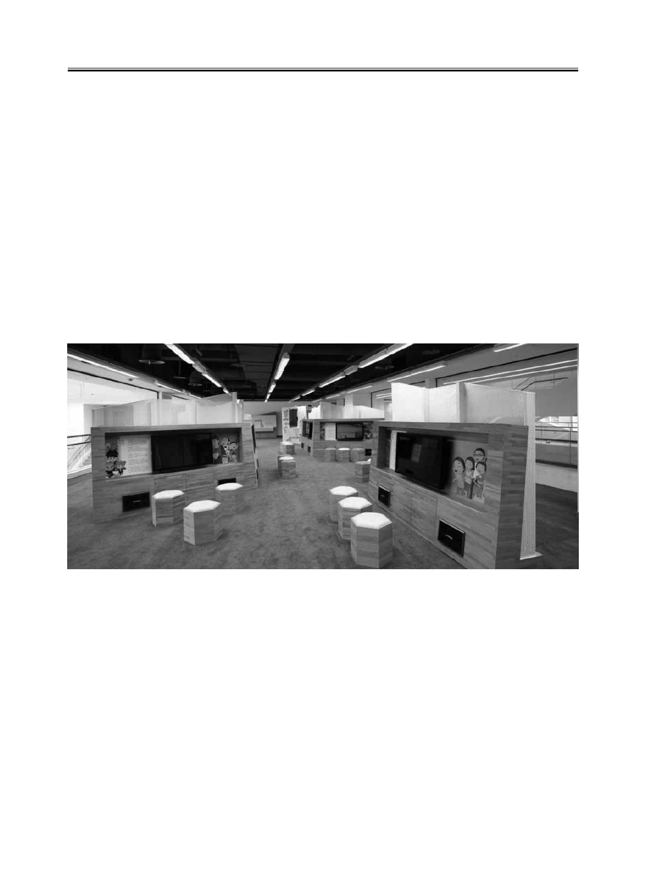
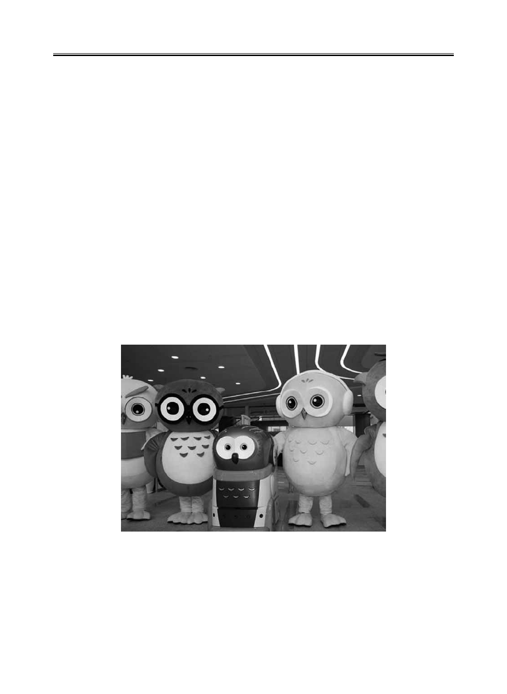
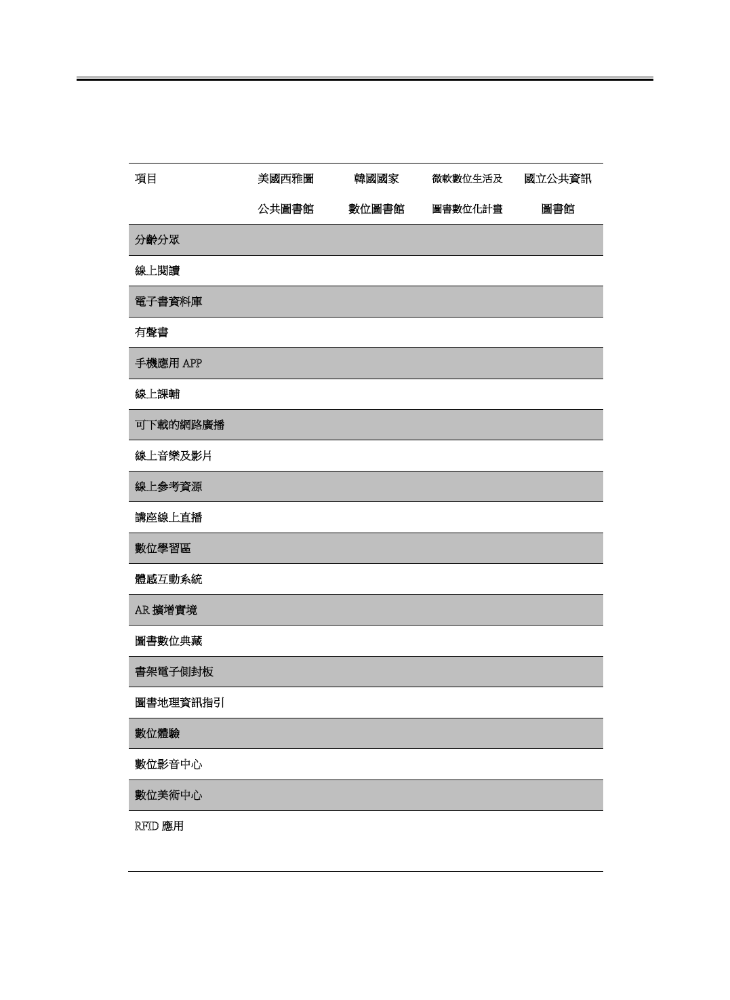

公共圖書館數位閱讀新體驗－以國立公共資訊圖書館為例
4544 4544
【摘要】
圖書館對於推廣閱讀一向不遺餘力，公共圖書館更是營造書香社會的重要推
手，然數位閱讀乃大勢所趨，本文就國立公共資訊圖書館（原國立臺中圖書館，
以下簡稱國資圖）建置之各項數位閱讀服務及其行銷策略加以說明，並提出國資
圖發展願景，期望與全國公圖共同打造數位閱讀新世界。
【Abstract】
The libraries have been committed to promote reading all the time, especially the
public libraries. However, E-reading is the trend of the times. This paper examines the
construction, services, and promoting strategies of e-reading in National Library of
Public Information (originally National Taichung Library, hereafter NLPI). The vision of
NLPI is also provided to facilitate building a new world of e-reading with other public
libraries nationwide.
公共圖書館數位閱讀新體驗－以國立公共資訊圖書館為例
Exploring E-Reading in the Public Library—Taking the
National Library of Public Information as an Example
呂春嬌
Chung-Chiao Lu
國立公共資訊圖書館
National Library of Public Information
director@nlpi.edu.tw
李宗曄
Tsung-Yeh Lee
國立公共資訊圖書館
National Library of Public Information
vl@nlpi.edu.tw

臺北市立圖書館館訊 30 卷 4 期
4746
關鍵詞：數位閱讀、電子書、數位圖書館、國立公共資訊圖書館
Keywords：E-Reading; E-book; Digital Library; National Library of Public Information
壹、前言
圖書館對於推廣閱讀一向不遺餘力，公共圖書館更是營造書香社會的重要
推手，隨著資訊通訊科技（ICT）的發展，圖書館除了典藏紙本媒體，對於數位
媒體的典藏亦逐年增加，近幾年更因寬頻、高速、高密度的數位通訊與數位典藏
環境趨於成熟，造就數位圖書館、網路圖書館時代的來臨，衝擊傳統圖書館之服
務方式，亦挑戰傳統圖書館存在之價值與功能。依據美國 Pew Research Center 於
2012 年的調查報告，在美國已經有五分之一的成年人在最近一年內閱讀一本以上
的電子書，較前一年成長 30 個百分比，若將數位內容定義得更廣泛，包括：雜誌、
期刊、新聞，則在 2011 年底已經有 43% 的美國成年人進行數位閱讀。而依據
PricewaterhouseCoopers（PWC）研究公司針對 2011 年到 2015 年全球娛樂與媒體
市場 （Global Entertainment and Media Market）所做分析預測報告顯示數位化之
消費性圖書出版與消費性雜誌具備最為顯著的成長動能，分別在 2011 年至 2015
年擁有 34.7% 及 30.6% 的年複合成長率表現，是平面出版的 10 倍（經濟部工業局，
2011）。
儘管數位出版與數位閱讀趨勢正如火如荼地在全球蔓延開來，但世界各國
投注於圖書館建設的資源並未減少，例如；北京的中國國家圖書館二期工程，為
一正式被規劃為「數位圖書館」（Digital Library）的國家級圖書館，於 2008 年
9 月啟用，耗資 11 億 3,000 萬人民幣（約 52.94 億新臺幣）；韓國首爾的國立中
央圖書館數位圖書館（Dibrary）於 2009 年 5 月開館，建造金額約 1 億美元（約
29.67 億新臺幣）（陳昭珍，2007），以上二所國家級圖書館皆定位結合數位資
源與實體館舍，虛擬與實體建設一同發展並未偏廢，顯示實體圖書館並不因為數
位時代來臨而消失，而是以虛實並重的經營策略提供嶄新的讀者服務，一如何光
國老師所述圖書資訊事業是一種科技敏感事業（何光國，1990），公共圖書館也
成為民眾搶先體驗數位閱讀的試驗場。
國立公共資訊圖書館（前身為國立臺中圖書館，以下簡稱本館），為因應資

公共圖書館數位閱讀新體驗－以國立公共資訊圖書館為例
4746
訊時代的變遷與圖書館功能的快速轉型，於 2006 年奉行政院核定辦理新館遷建
工程計畫並納入國家「新十大建設」之一（國立臺中圖書館，2006），開始為期
7 年的新館遷建工程，計畫確立同時，行政院指示本館轉型建置為國家級數位圖
書館，並在遷建計畫 20 億總經費下分配新臺幣 4 億元用於數位圖書館建設。新
館除了保留原有圖書館核心業務，特別加強現代化數位圖書館之資訊服務，提供
Web 2.0、行動化服務以及雲端科技並強化數位資源的典藏管理、永久保存機制，
目標為建構虛實合一、一如親臨，同時提供民眾全方位圖書資訊及各種數位閱讀
服務的公共圖書館。並將各項數位資源透過各數位服務平臺，分享供全國 500 多
所公共圖書館，透過網路及資訊交換方式，做為民眾資訊擷取點，達成資源互利
共享，縮減城鄉數位落差之全民終身學習平臺，並帶領全國公共圖書館事業積極
轉型立下良好典範，同時也提供讀者一座舒適新穎的知識殿堂，享受數位閱讀新
體驗的樂趣。
貳、數位閱讀的現況與趨勢
隨著科技及網路的發達，帶動出版品形式的多元化及載體的多樣化。人類知
識所賴以保存、傳承與溝通的主要媒介之一的紙本書，已漸漸被改變，將由生動
活潑又易於檢索、儲存量大、以及具有電腦的種種功能之優勢的電子書，成為現
在科技出版的主流及最熱門的新型態閱讀方式。現在電子書的形式被廣泛的應用
到生活當中，不論是平常的電子書閱讀或是延伸到學術的教學模式，都可以看到
電子書的蹤影。電子書已經被大量推廣，除了在政策面上的精進之外，於產業面
更是掀起一波波電子書市場熱潮（陳忠輝、石佳玄，2010）。
電子書產業已成為全球新一波數位化趨勢下的新藍海亮點，政府為因應這股
全球化數位熱潮，行政院於 2009 年 8 月 31 日核定通過「數位出版產業發展策略
與行動計畫」，預計未來 5 年將投入新臺幣 21.34 億元，將以提升產業全球競爭力、
技術深耕打造產業生態、擴大華文數位出版利基、促進優質數位閱讀社會等四大
策略推動電子書產業發展。其推動策略之一為「全民悅讀，建構知識平權」，以
提升閱讀人口、縮短數位落差為推動措施，以推動擴大數位學習應用、促進圖書
館電子書需求、推動偏鄉數位閱讀人口為行動計畫（杜紫君，2009），其目的在

臺北市立圖書館館訊 30 卷 4 期
4948
提升我國在全球電子書產業的領導地位。
2010 年被產業界視為是臺灣的電子書元年，許多電子書平臺投入商業營運，
出版業界也嘗試增加電子書數量及類型，同時努力探討電子書格式共通標準、數
位權利管理 (DRM)、洽談數位著作權、研擬訂價及拆帳模式等，希望能夠形成
共識，建立良好、成熟、穩定、合理的商業模式（李武育、魏秋宜，2010）。
經濟部工業局 2011 年臺灣數位內容產業年鑑指出臺灣數位內容產業發展上，
2011 年產業產值約為 6,003 億元新臺幣，較 2010 年產值 5,225 億元新臺幣成長約
14.89%，其中成長最快的為數位出版與典藏產業 , 受到電子書及 iPad 帶動，數位
內容的出版大幅成長。因此如何提供一個屬於本土讀者適用的正體中文數位閱讀
環境，以消弭人們獲取知識訊息的不平權及達到知識全民共享目標，是身為國家
級數位圖書館責無旁貸的責任與使命。
參、建構公共圖書館數位閱讀服務之基石
為了達成本館建置目標與推動數位閱讀服務願景，以下就資源面、管理面及
使用面等三個面向敘述本館自 2006 年至 2012 年建置數位圖書館的重要基礎建設
架構：
一、資源面：數位 ( 館藏 ) 資源購置、建置
分年採購及蒐集各種數位資源，包括：電子資料庫、電子書、數位影音資料、
數位學習教材、數位典藏資源等。
電子資料庫：57 個（含續購、增購）。
公共圖書館共用資料庫：25 個（含續購、增購）。
正體中文電子書（公共圖書館讀者使用）：12,000 種。
視訊隨選（VOD）（公共圖書館使用）：1,953 種。
數位學習教材（公共圖書館使用）：208 門。
典藏數位化作業：日文舊籍、舊版報紙及政府出版品數位化等作業。

公共圖書館數位閱讀新體驗－以國立公共資訊圖書館為例
4948
二、管理面：數位（館藏）資源管理
分實體館藏管理、虛擬館藏管理以及系統儲存設備管理三個面向。
實體館藏管理：ToRead 圖書館自動化系統：1、本館 5 所聯盟館，再增加臺
中市文化局暨各區圖書館，共享系統；2、擴增系統模組：Muse 整合查詢、電子
資源管理（ERM）、OpenURL 電子期刊管理、數位圖書館 Web 2.0 探索平臺；3、
互動影音教學軟體購置；4、電子書服務平臺觸控介面及功能升級；5、線上視訊
隨選系統（VOD）觸控介面升級。無線射頻識別 RFID 建置：全面更換館藏流通
作業原採用之條碼系統搭配磁條圖書安全系統為無線射頻辨識系統（RFID），提
供自助借書、還書自動分檢、彩色書標、可攜式盤點設備等。
虛擬館藏管理：建置數位資源管理系統、數位典藏管理系統、數位學習管理
系統、數位影音管理系統、電子書管理系統。
系統儲存設備：建置「資訊生命週期管理」（Information Lifecycle Management,
簡稱 ILM）儲存架構
，儲存與管理大量數位資源，使本館成為公共圖書館數位資源
典藏中心。
三、使用面：數位（館藏）資源服務
提供公共圖書館數位資源入口網、數位典藏服務網、線上視聽媒體中心、遠
距傳播教學中心以及電子書服務平臺，供全國公共圖書館及全民使用。
新館數位空間規劃及建置服務：配合新館館舍空間，規劃互動體驗設備應用、
共用服務管理系統及硬體設備等，包括：數位圖書館入口網等計 12 項共用系統、
兒童繪本故事屋 4 項大型數位體驗裝置、數位休閒桌等 4 項設備。
新館電腦機房與網路佈建案：1、機房及伺服器操作室運轉設備配置規劃；2、
輔助尖峰用電時段節能空調設備；3、UPS 不斷電電源供應系統；4、機櫃系統；5、
機房光纖線路繞送系統；6、機房結構化網路佈線系統；7、機房環境監控系統；8、
全館水平佈線系統。

臺北市立圖書館館訊 30 卷 4 期
5150
圖 2 數位圖書館由虛擬到實體之建置歷程
肆、公共圖書館數位閱讀新體驗
本館數位圖書館建置從 2006 年開始至 2012 年 2 月，期間有許多創新應用及
服務在當時乃為國內首見，在無其它單位經驗參考下，本館亦曾組團參訪國外圖
書館，引進最新資訊科技應用於圖書館服務上，提升服務品質，茲簡述各項數位
閱讀服務與資訊科技之運用如下：
圖 1 數位圖書館資訊服務系統架構

公共圖書館數位閱讀新體驗－以國立公共資訊圖書館為例
5150
一、正體中文電子書服務
本館遷建計畫以朝建置國家數位公共圖書館為目標，從 2006 年即開始執行
相關計畫。館藏是圖書館的核心，所以購置數位資源館藏被列為優先執行計畫，
其中以電子書形式呈現的數位資源，將是數位圖書館重要的內容之一。本館 2006
年底所購置的電子書資料庫，仍以西文電子書、簡體中文電子書為主，國內出版
界仍未發展出正體中文電子書的市場，可供圖書館大量採購及提供讀者閱覽服
務。
2007 年本館遷建新館計畫編列正體中文電子書經費 2,000 萬，但苦於無標的
物可採購，故本館採取主動與出版社龍頭遠流集團負責人及兼臺北市雜誌商業公
會理事長接洽溝通，希望透過其影響力召開各出版社會議並商討授權中文書轉製
成電子書等事宜。會議中各出版社紛紛提出看法，質疑臺灣電子書發展市場，擔
心電子書會削減紙本銷售市場，認為尚未有成熟可行的商業模式，害怕內容遭盜
版，造成智慧財產權的侵害等意見，但爭議最大的仍是電子書定價問題。出版社
期望與本館欲購價錢（
平裝本倍數）落差太大，最後無定論。茲因正體中文電子
書採購標案乃國內首創無前例可循，為服務全國讀者，經過多年研發與協商，突
破談判僵局，發展出本館特殊的採購模式，並開創正體中文電子書授權及計價模
式：
（一）評估各種電子資源授權使用模式
發現 copy 授權機制，較適合公共圖書館電子書服務之性質：可以突破限館
內 IP 範圍使用之限制，也可以依電子書熱門程度，增購 copy 數。
（二）招標方式採最低「倍數」標
廠商得標之「倍數」X 平裝書定價 X 購買的 copy 數，即為該次採購每種電
子書之售價。
（三）藉由不同倍數及 copy 數策略
指定 copy 數愈高的電子書，愈能吸引廠商與出版社洽談該電子書之授權，
一次談妥，即可快速達到採購案的達成率。
（四）提供出版社新電子書展示
提供出版社新電子書機制，出版社可免費授權 1 copy。若廠商對新書不願授

臺北市立圖書館館訊 30 卷 4 期
5352
權，電子書服務平臺亦提供免費展示之模式。
正體中文電子書採購案屬全國性的使用範圍，使用對象為全國公共圖書館所
服務之讀者。各館只要透過網路連線，即可分享使用各種數位資源，以均衡城鄉
因地域所產生之落差；全國公共圖書館之讀者只要透過各館的借書證即可加入會
員，在家免費下載閱讀電子書，臻至資訊無國界之「知識全民共享」境界。
二、智慧型館藏流通與管理系統
RFID 具有條碼無法提供的整批讀取、可讀寫大量資料、可程式化的特性，
包括讀者與館藏資料均可結合 RFID 擴大許多應用，提供圖書館進行館藏精確的
管理，以及擴充更多的即時服務功能（余顯強，2005）。本館為因應逐年日增的
業務量，及滿足讀者多元需求，於 2006 年起導入 RFID 技術，由原有的磁條式圖
書安全系統全面更換為 RFID 標籤及設備，並結合彩色書標顏色館藏管理，搭配
自助借還書機、自動還書分揀系統及數位式館員工作站建構智慧型館藏流通及管
理系統，大幅提升讀者自助借還書之便利性及館藏流通的速度與效能，並充分運
用 RFID 無線識別的特性，於 2010 年於臺中火車站、署立臺中醫院、中國醫藥大
學附設醫院等三處，分別設立微型自助圖書館，除了延伸圖書館的服務據點，也
提供通勤、就醫、醫護人員等讀者體驗更便利的圖書館創新服務。
圖 3 本館電子書服務平臺

公共圖書館數位閱讀新體驗－以國立公共資訊圖書館為例
5352
圖 4 RFID 自動還書分揀系統
三、資訊便利站 Kiosk
為因應新館空間倍增為舊館六倍，但人力一員未增，並提供新館空間數位服
務氛圍，因此建置館藏查詢、空間導覽及預約訂位等三款 Kiosk 共 28 部。
（一）館藏查詢 Kiosk
提供讀者即時且完整的館藏資訊，系統透過 API 的串接自動化系統之書目、
館藏資料，系統並結合圖書地理位置指引功能，提供讀者透過書目資料，連結對
應圖書存放位置之圖書館樓層、空間、架位平面圖等相關資訊。
（二）空間導覽 Kiosk
透過便利的觸控介面，提供室內樓層導覽，於不同的樓層平面圖清楚的展示
館內各空間位置。透過環場實景圖介紹各項空間，讓讀者能快速了解館內各項服
務設施。
（三）預約訂位 Kiosk
為有效提升自修室、視聽座位、討論小間等各場地座位之管理效率，座位登
記管理系統結合自動化系統讀者檔、RFID 無線自動辨識技術、Zigbee 無線傳輸
技術、Kiosk 線上查詢與 SOA(Service Oriented Architecture) 服務導向架構技術平
臺，讓座位資源使用更加公平化、人性化、便捷化。不僅提供讀者更方便的服務，
亦能提升圖書館資源的管理效率。

臺北市立圖書館館訊 30 卷 4 期
5554
圖 5 資訊便利站 Kiosk
四、數位互動裝置
（一）兒童故事屋
藉由數位繪本與互動操作，創造體驗環境，讓孩童走進故事情節之中，合作
互動共同完成故事，並且傳達內在教育意涵。
圖 6 兒童故事屋

公共圖書館數位閱讀新體驗－以國立公共資訊圖書館為例
5554
（二）體感互動系統
投影畫面出現書封，並隨著讀者移動，結合資料探勘與個人化服務，創造資
訊流無所不在的多媒體智慧空間（Ubiquitous Multiplex）。
圖 7 體感互動系統
五、大型螢幕導覽系統及活動資訊推播系統
（一）大型螢幕導覽系統
位於入口大廳，一面高 1.5 公尺，寬 6 公尺的大型觸控螢幕，為進館後第一
個指引全館空間所在，定位為導覽用途之多功能資訊呈現區，提供解說員於進館
時透過此螢幕向團體作介紹，作為一進館的綜合資訊中心，可取代部份服務臺功
能，提高服務品質與效率。
圖 8 大型螢幕導覽系統
臺北市立圖書館館訊 30 卷 4 期
5756
（二）活動資訊推播系統
位於各樓層主要動線處，運用於教育推廣、政令宣導、圖書資訊公告、各處
室公告。可同時整合分類播放，多分割畫面公告館內各項即時業務、緊急連絡通
報等訊息，及預約座位叫號情形，同時減少傳統紙質海報之印刷與張貼。
六、圖書地理資源指引系統
提供讀者透過書目資料，連結對應圖書存放位置之圖書館樓層、空間、架位
平面圖等相關資訊，並製作產生書目館藏的 QR Code，讓讀者在查得館藏書籍資
料後可透過智慧型手機等行動裝置，取得館藏資訊及圖書地理位置資訊，不需再
像以往需隨時備妥紙筆抄下書籍的館藏架位資料。系統另提供 API 整合圖書館自
動化系統之館藏預約功能，如該館藏目前為外借狀態，讀者則可於館藏資料欄位
處點選「預約」執行相關作業，於本系統滿足一站式服務（one-stop shopping）的
使用需求。
七、書架電子側封板：推播書訊
各樓層書架電子側封板，擷取自自動化系統之書目館藏資料與架位資訊對應
組合，從書架瀏覽的呈現方式，提供讀者可於書架側封板利用觸碰螢幕直接瀏覽
鄰近架位之館藏，並能瀏覽由館員設定推薦的新書或展示書等推播書訊，引介讀
者閱讀。
八、數位圖書館入口網
數位圖書館入口網除收錄各項數位電子資源外，亦將實體館藏查詢系統整合
其中，達到數位與實體資源的無縫整合效果（Seamless Integration）。提供 Open
ID 等帳號整合機制及單一登入的設計（Single Sign On），使用者可免去多次登入
的麻煩，提高數位資源之使用率，並透過 MUTIPROXY 認證方式，使用數位入口
網提供的各式的電子書、電子資料庫、以及各種數位資源存取與閱讀，在線上體
驗本館豐富數位資源。

公共圖書館數位閱讀新體驗－以國立公共資訊圖書館為例
5756
九、科技運用分齡分眾
（一）兒童學習中心
提供幼兒閱讀區、AR（擴增實境）體驗區、數位資源區、互動故事屋、藝
術手作室、中文圖書閱覽區、西文圖書閱覽及戶外活動區等，兒童圖書近 4 萬冊、
閱覽席位約 300 席。
（二）青少年中心
提供專屬討論室、益智桌遊、漫畫區，結合社群媒體 Facebook 進行各式推
廣活動與互動，讓青少年分享創意、學習成長。
（三）樂齡學習資源中心
提供沙發椅、加高式書架、大字書、擴視機及數位休閒平臺（含多種棋藝遊
戲）、數位閱報機等貼心設施。
圖 9 數位休閒平臺
（四）聽視障資源中心
提供雙視書、附點字機電腦、有聲書錄音室，加強服務聽視障讀者。
十、三大亮點
（一）「數位體驗中心」：
整合科技與藝術的原創設計概念建置數位體驗區，為未來數位閱讀生活提供

臺北市立圖書館館訊 30 卷 4 期
5958
一個創新應用示範。以系列主題的方式，進行數位出版與典藏資源的活化，例如：
利用漢字主題、圖書演進、甲骨文占卜、金文鑄造、臨摹書寫、活字印刷 DIY。
透過主題策展方式的整合，數位典藏資訊將不只是被動地以單筆資料的形式被檢
視，而能讓觀眾更能進入以圖書為中心而延展出歷史文化脈絡，使館方的數位典
藏資源發揮最大的意義與價值。經由「數位體驗中心」結合主題性的策劃展示和
城鄉各圖書館特色館藏連結的平臺。
（二）「數位休閒中心」：
規劃辦理常設展與特展，凸顯數位圖書館之教育學習功能。如太極拳拳譜、
數位赤壁賦及互動動畫故事體驗、電子書展示等。
圖 10 數位休閒中心
（三）「數位美術中心」
與國內大專院校設計及視覺相關科系合作，提供學習、創作、發表及社群分
享需求，進行 1. 主題特展；2. 當期畢展活動；3. 歷年設計展示等。
「數位體驗中心」、「數位美術中心」和「數位休閒中心」三大亮點的建立，
本館將擁有更豐富的內容與資產，而能開發出各種不同主題的產品，建立起專屬
於數位圖書館的品牌形象，吸引更多民眾進入館內使用各種資源與參觀展覽，成
為臺灣數位圖書館的典範代表。

公共圖書館數位閱讀新體驗－以國立公共資訊圖書館為例
5958
十一、運書機器人
本館與精密機械研究發展中心合作開發的運書機器人－「波比」（2012 年由
本館小朋友讀者投票所命名），為一客製化的機器人，設有雷射掃描儀進行空間
定位，可以避免碰撞；其外型採用本館吉祥物－貓頭鷹的造型，搭配小朋友熟悉
的巴斯光年配色設計，帶領小朋友讀者一同探索數位時代及陪伴閱讀。
廣受讀者喜愛的機器人，目前主要功能為從自動分檢書區將兒童圖書運至兒
童學習中心，路途中若遇讀者故意觸碰或非故意擋住，機器人會發出「對不起，
借過」的聲音；如遇讀者故意阻擋不移開，機器人則會「變換生氣的表情」並發
出「請借過，不然我要生氣了」的警示語，整體相當逗趣可愛。除可發出簡易話
語外，機器人可接受客製化的語音錄製內容，協助推廣館內服務，例如：錄製多
國語言向讀者問好、某特定區域的導覽說明等。該貓頭鷹運書機器人平日於本館
一樓進行服務運行，並於 2012 年 8 月至 9 月曾外借至臺北國際機器人展參展，
協助國家展現新科技融入各項產業之實力，
以開創商機及建立合作關係。
圖 11 運書機器人
十二、與國外數位圖書館比較
本館各項數位閱讀與資訊科技之運用服務與他國圖書館之比較如下表：

臺北市立圖書館館訊 30 卷 4 期
6160
表 1 本館與國外數位圖書館比較表
17
表 1. 本館與國外數位圖書館比較表
項目 美國西雅圖
公
共圖書館
韓
國國家
數
位圖書館
微軟數位生活及
圖書數位化計畫
國立公共資訊
圖
書館
分齡分眾 ● ● ●
線上閱讀 ● ● ● ●
電子書資料庫 ● ● ●
有聲書 ● ●
手機應用 APP ● ● ● ●
線上課輔 ● 未來可實行
可下載的網路廣播 ● 未來可實行
線上音樂及影片 ● ● ● ●
線上參考資源 ● ●
講座線上直播 ●
數位學習區 ● ●
體感互動系統 ● ●
AR 擴增實境 ●
圖書數位典藏 ● ● ● ●
書架電子側封板 ●
圖書地理資訊指引 ●
數位體驗 ● ● ●
數位影音中心 ● ●
數位美術中心 ● ●
RFID 應用 自助借書機
還書分撿機
圖書館證、門
禁、座位登記…
N/A 左列應用
本館均有
註：●符號表示提供該項服務
註：●符號表示提供該項服務

公共圖書館數位閱讀新體驗－以國立公共資訊圖書館為例
6160
伍、數位閱讀之行銷策略
一、從購買現成到自創品牌
以往國內許多圖書館大多購買現成資料，其實我國也有許多值得開發的品
牌，因此與其他單位協商合作後，本館決定開發包括繪本書籍、創意設計作品展
示平臺、數位典藏以及電影文學資料庫等四種：
（一）繪本書籍
本館基於鼓勵青年學子繪本創作，發掘及培育繪本創作人才，與國內各學
校、機關簽署合作協議，將學生繪本創作進行數位典藏及數位加值。第一期計畫
於 2011 年 3 月 3 日與臺中市明道中學簽約，共收錄學生創作繪本 53 本，目前與
其他學校洽簽合作協議中。每一本繪本數位加值包含三部分：1、為提升國內學
童閱讀能力，製作無文字繪本，讓學童看圖說故事盡情發揮想像力；2、忠實呈
現原作者之圖畫與故事，讓讀者分享作者的創作；3、為協助新移民家庭創造親
子共讀環境，除配音導讀之外並將文字加上注音符號和漢語拼音，讓新移民家長
與孩子一起享受親子閱讀的幸福。目前收集明道中學 90 種繪本（無字繪本、故
事繪本與有聲繪本等三種格式），並命名為「圓夢繪本資料庫」，與提供加值服
務。
（二）設計師之手
規劃建置屬於年輕學子的創意設計作品展示平臺，希冀與國內創意設計相關
科系所建立合作機制。預計蒐集「平面作品」、「數位多媒體作品」與「建築 /
景觀 / 室內 / 空間設計」三大類型之年輕學子優秀創意設計作品，以提供讀者欣
賞瀏覽，並完整記錄作品之發展與傳承。期望鼓勵學生積極參與創意設計，增加
其曝光機率與提高能見度，並使學生之創意發想，於此平臺中獲得參考與啟發。
（三）數位典藏
「典藏數位化」為數位圖書館重要的項目之一，本館數位典藏服務網整合舊
版報紙、古文書、日治時期日文舊籍及地方文獻等四大主題，提供讀者更好的服
務。至於資料所有權及使用權，數位化原件均為五十至百年前之個人或機構出版
品，經由本館採訪入藏至今，所有權及使用權屬圖書館。這些出版品多數因機構

臺北市立圖書館館訊 30 卷 4 期
6362
不復存在而絕版。本館經過合理的努力而認定不能以合理價格取得一份未使用過
的替換物時，透過著作權法第四十八條第二款，可以解釋為「基於保存資料之必
要」所為之重製。數位化可減少原件管理成本及對原件取用的損害，逹到文化資
產保存。提供整合檢索及加值應用，達到文化資產保存目的。
（四）電影文學資料庫
由本館自行建置，以電影、原著（含譯本）、影評和書評為主，截至 102 年
2 月，共建置 907 種資料，其中包含：圖書 1,225 筆、電影 3,109 筆、評論 1,242 筆，
合計 5,576 筆。
二、從實體到虛擬
本館為實踐虛實合一的服務理念，故致力從實體到虛擬的服務，包括：建構
各服務平臺，提供數位服務；參考諮詢服務網；以及首創數位辦證服務等：
（一）建構各服務平臺，提供數位服務
美 國 資 訊 科 學 期 刊 (Annual Review of Information Science and Technology,
ARIST)，定義數位圖書館可以是一個虛擬、無所不包、可管理並長久保存數位內
容的組織，其提供使用者及社群遵循一致的標準並具有一定品質的數位內容。
因此，本館致力於徵集、篩選與建構豐富高品質之數位內容，在新館也建置
一個完善且穩定的雲端機房，以確保數位內容長久典藏，線上數位服務不間斷，
以延伸實體圖書館的服務。提供個人或社群不受時空限制線上虛擬圖書館服務，
拓展圖書館服務範圍到全國民眾甚至國外使用者，讓使用者真正享受到一個虛實
合一、一如親臨國立級公共圖書館服務。
（二）參考諮詢服務網
此外，本館設置的「參考諮詢服務網」為一線上虛擬知識庫，期待發揮知識
共享精神。在參考諮詢服務網，讀者可搜尋發問紀錄，亦可協助解答他人問題。
（三）首創數位辦證服務
節省民眾往返圖書館時間，除臨櫃辦理外，亦可透過線上辦證服務，申辦團
體數位借閱證使用本館數位資源。2011 年 12 月 1 日起，進一步試辦個人讀者網
路申辦借閱證服務，數位資源使用便利通。

公共圖書館數位閱讀新體驗－以國立公共資訊圖書館為例
6362
三、從館內到館外
本館所提供的數位資源及系統，均以提供全國公共圖書館使用為目標，並配
合各種推廣訓練計畫，將觸角深入偏鄉圖書館及學校。具體作法包含：
數位資源授權以全國公共圖書館及讀者使用為主：包含電子書、電子資料庫、
數位影音資源、數位學習教材等。
資訊系統開發時，以全國公共圖書館使用為設計出發，發展出全國公共圖書
館資訊服務之雲端中心。
密集舉辦數位資源推廣研習，並藉由錄影轉製數位學習教材，提供民眾學習。
四、從政府到民間
（一）合作擴增多元館藏與服務
過去本館為 9 所政府出版品指定寄存圖書館之一，單向接收研考會寄送出版
品及活動協辦。未來以策略聯盟合作方式，與研考會於新館合作設立臺灣資料中
心 (Taiwan Corner, TC)，除展示豐富多元之政府出版成果，雙方並將規劃多場閱
讀推廣活動，使更多的民眾得以接觸使用政府出版品。此外結合多元文化服務，
提供外籍人士認識本國文化的交流平臺。
本館電子書服務平臺獲行政院研考會審核，成為政府出版品電子書授權對
象，透過平臺之廣大會員群以行銷政府出版品。2011 至 2012 年直接自發行機關
取得授權的政府出版品共 72 種，包括：相邀來去臺 9：山海相隨的 475 公里、司
馬庫斯、通往香格里拉的四條祕徑、戀戀武陵山水情、綠野尋蹤等等，為成功的
政府出版品電子書授權範例。
（二）電子書服務平臺的延伸價值
爭取研考會補助經費，於 2011 年及 2012 年共補助 24 所偏鄉圖書館推出閱
讀載具借用服務。「數位閱讀到您家 ~ 電子書載具借閱計畫」，共補助閱讀器計
240 臺。此外，通過經濟部工業局「數位內容產業發展補助計畫」補助（與凌網
科技公司合作）電子書服務平臺升級推出 iPad 及 Android 平板行動閱讀服務。
2010 年 9 月經濟部工業局「數位內容產業發展補助計畫」補助凌網科技公司
（約 4,000 萬元），修正電子書服務平臺相關功能。也申請研考會補助偏鄉平板

臺北市立圖書館館訊 30 卷 4 期
6564
電腦借用計畫，作為數位閱讀之延伸應用，並成為研考會政府出版品電子書授權
對象。
2011 年 1 月 5 日獲研考會採用作為偏鄉筆電借用指定應用系統。6 月 8 日
聯合報頭版報導，新增 iPad /Android 使用功能後使用率大增。同時曾運用 Google
關鍵字廣告，獲得 Google 關鍵字廣告成功案例宣傳。6 月 19 日參加遠見雜誌舉
辦「閱讀領航 ‧ 彰化閱讀季」。
五、從競爭到合作
本館已成為研考會政府出版品提供電子書服務之主要民眾服務中心。國家圖
書館以典藏為主、本館以數位閱讀推廣為主。已獲得研考會及其他政府單位授權
政府出版品超過 2 千種。另外，彰化縣政府於 2012 年，採購 878 冊電子書置於
國中圖電子書服務平臺，擴大服務更多縣民。透過此合作機制，未來本館希望成
為「全國公共圖書館電子書聯合目錄」中心。
陸、結語
內容與服務是圖書館之核心價值。亞馬遜 Amazon Kindle 電子書整合了內容、
軟體、硬體、通訊四合一，在美國市占率最高；美國最大連鎖書商邦諾書店 (Barnes
& Noble) 推出 Nook 電子書閱讀器，搭配自家逾 70 萬冊書籍的電子書店數位內容
優勢；蘋果公司推出的 iPad 平板電腦也和線上書店 iBookstore 合作行銷 ( 陳穎青，
2010a)；中國大陸有北大方正、超星、書生之家、中文在線等出版大量的簡體中
文電子書；在臺灣近幾年雖有少數出版社與廠商皆在積極出版，但規模仍有所侷
限，直到本館於 2007 年開始籌劃正體中文電子書服務，並於 2009 年突破當時的
談判僵局正式向全國公共圖書館讀者提供正體電子書服務時，實為當時正體中文
電子書規模之首見，也為正體中文電子書市場開闢新局，達成國內正體中文電子
書發展過程中重要之一項里程碑，接下來的幾年，隨著行動網路、行動裝置及各
式閱讀設備的普及，各家出版社與廠商所推出之正體中文電子書服務也開始如雨
後春筍般地湧現。
內容推進實驗室部落格網站站長陳穎青認為，讀書是讀內容，不是讀機器，

公共圖書館數位閱讀新體驗－以國立公共資訊圖書館為例
6564
認為從政府到民間，在這一波電子書狂熱中最大誤解，就是把「書」和「機器」
混為一談。一般民眾認為電子書就是那手掌大、黑白螢幕的省電機器，卻不知道
書是書，機器是機器。書是內容，是意念，是情節，是作者傳遞想法的文字，機
器只是表達內容的載體。認為臺灣能上架的電子書太少了，請政府重視（陳穎青，
2010b）。因此如何充實中文電子書才是政府刻不容緩的議題。
館藏是圖書館服務的核心，實體館藏與數位館藏同等重要。曾淑賢（2006）
曾對國內公共圖書館電子書的館藏發展提出建議，她認為電子書可以增加館藏卻
不需增加儲存的空間、省去儲放、運送的費用；免去書籍本身可能被竊、毀損及
遺失的顧慮；讀者可以隨時隨地借閱電子書。種種優點伴隨著全球化及數位化的
潮流，也印證本館發展數位館藏的目標及方向是正確的。
本館於 2012 年完成遷建新館，是國內第一座國立數位圖書館，配合組織改
造於 2013 年元旦正式更名為「國立公共資訊圖書館」。以民眾探索知識的領航
者、縮短數位落差的實踐者以及深耕全民閱讀的推動者做為新館未來發展願景，
本館將善用 520 所公共圖書館的「通路」，成為提供各式學習與體驗的「平臺」，
打造全國公共圖書館的「雲」，一圓全民數位學習的夢。結合實體與虛擬的公共
服務空間，導入多項數位閱聽服務，將圖書館全面進化升級，提供民眾除了家庭
及工作之外的第三空間，並營造一個閱讀（Reading）、探索（Exploring）、休閒
（recreAtion）、終身學習（Learning），虛實合一，一如親臨的 REAL Library。
在可預見的數位時代，閱讀將採實體與虛擬的數位閱讀雙軌並行，本館將持續協
助新時代的讀者開拓視野，培養適應數位環境的能力，並期待與全國公共圖書館
齊心共同打造數位閱讀新世界。
參考書目
1. 何光國 (1990)。
圖書資訊組織原理
。臺北市：三民。
2. 余顯強 (2005)。圖書館導入無線射頻識別應用之研究。
教育資料與圖書館學，
42
(4)，509-522。
3. 杜紫軍 (2009)。數位出版產業發展策略與推動現況。2013 年 3 月 20 日，取自：
http://bimn. rdec.gov.tw/lib/lib02/bimn/275/275-10.pdf

6766
臺北市立圖書館館訊 30 卷 4 期
6766
4. 呂春嬌 (2012)。承先啟後、繼往開來－國立公共資訊圖書館的成長與蛻變。
走
向榮耀歲月迎向嶄新未來
：
國立臺中圖書館新館開幕紀念專輯
。臺中市：
國立臺中圖書館。
5. 陳昭珍 (2007)。
建構國家數位公共圖書館委託研究計畫－期末報告
。
6. 陳忠輝、石佳玄 (2010)。電子書出版產業現況與未來趨勢。2013 年 3 月 15 日，
取自：http://ww.cepp.gov.tw/TheFiles/publication/b255b84b-9fdc-4355-b767-
d13445851fd5.pdf
7. 陳穎青 (2010a)。為什麼臺灣能上架的電子書這麼少 ?。
內容推進實驗室
。2013
年 3 月 15 日，取自：http://www.contnt.net/2010/02/why-so-few-ebook-titles.
html
8. 陳穎青 (2010b)。只見電子不見書。
內容推進實驗室
。2010 年 3 月 15 日，取
自 http://www.contnt.net/2010/02/ebook-and-ereader.html
9. 曾淑賢 (2006)。臺北市立圖書館電子書館藏使用分析及館藏發展探討。
臺北市
立圖書館館訊，23
(3)，103-104。2013 年 3 月 15 日，取自：http://www.
tpml.edu.tw/public/Attachment/033011584420.pdf
10. 經濟部工業局 (2011)。
2011 臺灣數位內容產業年鑑
。臺北市：經濟部工業局。
11. 國立臺中圖書館 (2006)。
國立臺中圖書館數位公共圖書館建構計畫
( 未出版原
始資料 )。
12. Bearman, D. (2007). Digital libraries.
Annual Review of Information Science and
Technology, 41
, 223-272.
13. Rainie, Zickuhr, Purcell, Madden,Brenner (2012). The Rise of E-Reading. Retrieved
March 15, 2013, from http://libraries.pewinternet.org/files/legacy-pdf/The%20
rise%20of%20e-reading%204.5.12.pdf